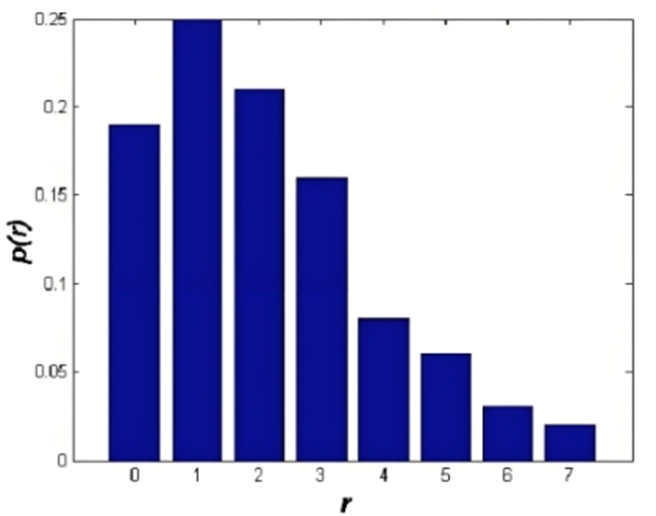
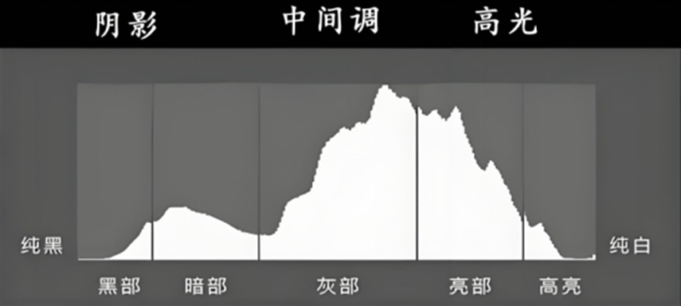
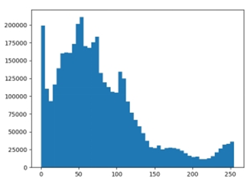
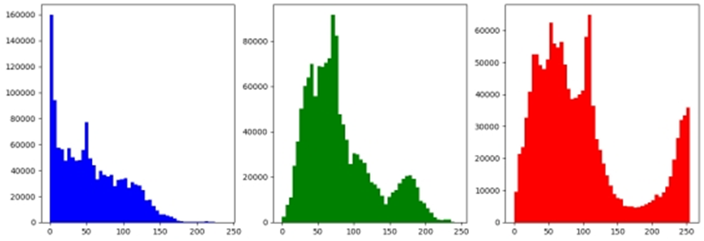

5 对比度增强与直方图均衡
对比度是指图像中亮度或灰度级别的差异程度。高对比度图像具有更明显的明暗差异，细节更易辨识；低对比度图像则显得平淡，细节可能被掩盖。对比度增强是计算机视觉和图像处理中的重要技术，旨在提高图像的视觉质量，使其细节更清晰、特征更突出。对比度增强的目标是通过调整像素值分布，扩大亮度范围或重新分配灰度值，从而提高图像的视觉质量和后续处理效果。
图像对比度可以通过灰度值范围或直方图分布来量化： - 全局对比度：由图像整体灰度值范围决定，通常用最大灰度值与最小灰度值之差表示。 - 局部对比度：由局部区域内像素值的变化程度决定，常用于纹理分析。
基于此，对比度增强方法通常分为两类： - 点操作：如 Gamma 校正，直接对每个像素值进行变换。 - 全局/局部变换：如直方图均衡和 CLAHE，基于灰度值分布调整像素值。
本章节将详细介绍三种常见的对比度增强方法：直方图均衡、对比度受限自适应直方图均衡（CLAHE）和 Gamma 校正。
5.1 直方图均衡
5.1.1 基本原理
图像直方图是表示图像灰度值分布的统计工具。对于灰度图像，直方图显示每个灰度级别（通常 0 到 255）的像素数量。直方图的形状反映了图像的对比度和亮度特性： - 集中于低灰度值：图像偏暗。 - 集中于高灰度值：图像偏亮。 - 分布狭窄：对比度低。 - 分布均匀：对比度较高。
通过调整直方图分布，可以使灰度值更均匀或更有针对性地增强特定区域。
直方图均衡（Histogram Equalization）是一种全局对比度增强方法，通过重新分配灰度值使直方图尽可能均匀，从而扩大图像的动态范围。其核心思想是将原始灰度值的累积分布函数（CDF）映射到输出灰度值。
对于灰度图像 (I)（灰度范围 [0, L-1]，通常 (L=256)），直方图均衡的步骤如下： 1. 计算灰度直方图 (h(r))，表示灰度值 (r) 的像素数量。 2. 计算累积分布函数： [ (r) = {k=0}^{r} h(k) ] 3. 归一化 CDF： [ s(r) = (L-1) ] 其中，({}) 是非零的最小 CDF 值。 4. 将原始灰度值 (r) 映射到新灰度值： [ r’ = s(r) ]
 图像中直方图横坐标是表示灰度值，左边暗右边亮，纵坐标表示像素分布的数量。根据图像形态，可以初步判断照片的暴光情况，直方图是照片曝光情况最好的反馈。从理论上说，一张曝光良好的照片，各亮度值上都有像素分布。 把直方图划分为5个区：每个区代表一个亮度范围，左边为黑部、暗部，中间为中间调，右边是亮部和高亮，如果覆盖了整个区域说明曝光情况正好且细节清晰可见。

1.1.2颜色直方图 颜色直方图，是一种能快速描述图像整体像素值分布的统计信息图表。图表能显示出某一像素值范围的像素点的个数，X轴为像素值，Y为个数。颜色直方图只能描述颜色的分布，不能描述数据几何上的信息。即只知道这个像素值范围的点的个数有多少个，但无法知道这个点在哪个位置上多。 绘制颜色直方图方法：用numpy的histogram()函数得到直方图的信息，再用matplotlib绘制出图像。下面是核心的函数功能信息。 img.ravel()：把多维数组转化成一维数组。 matplotlib.pyplot.hist(X, BINS)：X：数据源，必须是一维的。通常二维图像，需要使用ravel()函数将图像处理为一维数据源。BINS：表示灰度级的分组情况。 plt.hist(img.ravel(),256,[0,256],facecolor =‘black’)：hist：hist函数只支持一维的数组。256：256 表示横坐标的最大值为256，有256条柱。[0,256]：[0,256]表示数据显示范围，横坐标超过256的数据也归到256处。facecolor：facecolor 表示柱状图的颜色。完整代码如下。
5.1.2 实现方法
以下是基于 Python 和 OpenCV 的直方图均衡实现：
import cv2
import numpy as np
import matplotlib.pyplot as plt
img = cv2.imread(r'girl2aa.jpg') #读入图像
hist, bins = np.histogram(img.ravel(), bins=50)
plt.hist(img.ravel(), bins=50);
cv2.imshow('img', img)
cv2.waitKey(0)
import cv2
import matplotlib.pyplot as plt
img_bgr_data = cv2.imread(r'girl2aaa.jpg') # 彩色图像直方图
plt.figure(figsize=(15, 5)) #设置画布的大小
ax1 = plt.subplot(131) # B通道 直方图
ax1.hist(img_bgr_data[:, :, 0].ravel(), bins=50, color='b')
ax2 = plt.subplot(132) # G通道 直方图
ax2.hist(img_bgr_data[:, :, 1].ravel(), bins=50, color='g')
ax3 = plt.subplot(133) # R通道 直方图
ax3.hist(img_bgr_data[:, :, 2].ravel(), bins=50, color='r')
cv2.waitKey(0)
plt.show() ### 优点与缺点
(1)优点： - 简单高效，自动增强全局对比度。 - 适合低对比度图像。
(2)缺点： - 可能放大噪声或导致过曝。 - 不适合局部对比度增强。
5.2 对比度受限自适应直方图均衡（CLAHE）
5.2.1 基本原理
自适应直方图均衡化(AHE)用来提升图像的对比度的一种计算机图像处理技术。和普通的直方图均衡算法不同，AHE算法通过计算图像的局部直方图，然后重新分布亮度来来改变图像对比度。因此，该算法更适合于改进图像的局部对比度以及获得更多的图像细节。
对比度受限自适应直方图均衡（Contrast Limited Adaptive Histogram Equalization, CLAHE）是AHE的改进版本，通过限制对比度来避免噪声的过度放大。它在增强局部对比度的同时，能够有效控制噪声。CLAHE同普通的自适应直方图均衡不同的地方主要是其对比度限幅。这个特性也可以应用到全局直方图均衡化中，即构成所谓的限制对比度直方图均衡（CLAHE），但这在实际中很少使用。在CLAHE中，对于每个小区域都必须使用对比度限幅。CLAHE主要是用来克服AHE的过度放大噪音的问题。 这主要是通过限制AHE算法的对比提高程度来达到的。在指定的像素值周边的对比度放大主要是由变换函数的斜度决定的。这个斜度和领域的累积直方图的斜度成比例。CLAHE通过在计算CDF前用预先定义的阈值来裁剪直方图以达到限制放大幅度的目的。这限制了CDF的斜度。因此，也限制了变换函数的斜度。直方图被裁剪的值，也就是所谓的裁剪限幅，取决于直方图的分布因此也取决于领域大小的取值。
5.2.2 实现方法
import cv2
import matplotlib.pyplot as plt
img = cv2.imread(r'img/tihu.jpeg',0) # 读取图像
clahe = cv2.createCLAHE(clipLimit=2.0, tileGridSize=(8, 8))
clahe_img = clahe.apply(img)
# 显示结果
plt.figure(figsize=(10, 5))
plt.subplot(1, 2, 1)
plt.title('Original Image')
plt.imshow(img, cmap='gray')
plt.subplot(1, 2, 2)
plt.title('CLAHE Image')
plt.imshow(clahe_img, cmap='gray')
plt.show(){kind=link}
5.2.3 优点与缺点
(1)优点： - 局部增强，保留细节，适合复杂场景。 - 对比度限制有效抑制噪声放大。 - 参数（clip limit 和 tile size）可调，灵活性高。
(2)缺点： - 计算复杂度高于全局直方图均衡。 - 块边界可能引入轻微伪影。 - 参数选择需经验或实验优化。
5.3 Gamma 校正
5.3.1 基本原理
Gamma 校正是一种非线性点操作，通过幂律变换调整图像的亮度和对比度。其数学表达式为：
[ O = I^{} ]
其中： - (I)：输入像素值（通常归一化到 [0, 1]）。 - (O)：输出像素值。 - ()：Gamma 值，控制亮度调整。 - (< 1)：增强暗部细节，图像变亮。 - (> 1)：增强亮部细节，图像变暗。
5.3.2 实现方法
以下是基于 Python 和 NumPy 的 Gamma 校正实现：
5.3.3 优点与缺点
()优点： - 实现简单，计算效率高。 - 可通过调整 () 灵活控制亮度。 - 适用于实时处理。
(2)缺点： - 不基于图像内容，可能导致局部区域细节丢失。 - 对噪声敏感，可能放大噪声。 - 单一参数限制了复杂场景的适应性。
5.4 三种方法的比较
(1)数学特性
- 直方图均衡：全局变换，基于累积分布函数，自动均匀化灰度分布。
- CLAHE：局部变换，基于块直方图均衡和对比度限制，适合复杂场景。
- Gamma 校正：点操作，非线性变换，直接调整像素值。
(2)增强效果
| 方法 | 全局对比度 | 局部细节 | 噪声放大 | 计算复杂度 |
|---|---|---|---|---|
| 直方图均衡 | 优秀 | 一般 | 高 | 低 |
| CLAHE | 良好 | 优秀 | 低 | 中等 |
| Gamma 校正 | 一般 | 一般 | 中等 | 低 |
(3)应用选择
- 直方图均衡：适合低对比度、灰度分布集中的图像，快速增强全局对比度。
- CLAHE：适合需要保留局部细节的复杂场景，如医学图像。
- Gamma 校正：适合快速调整亮度或校准显示效果。
(4)实际实现与效果分析
以下是一个完整的 Python 示例，展示如何对低对比度图像应用三种方法并比较效果：
import cv2
import numpy as np
import matplotlib.pyplot as plt
# 加载图像
image = cv2.imread('low_contrast_image.jpg', cv2.IMREAD_GRAYSCALE)
# 应用三种方法
hist_eq = histogram_equalization(image)
clahe_img = clahe(image, clip_limit=2.0, tile_grid_size=(8, 8))
gamma_img = gamma_correction(image, gamma=0.5)
# 显示结果
plt.figure(figsize=(15, 10))
plt.subplot(221), plt.imshow(image, cmap='gray'), plt.title('Original Image')
plt.subplot(222), plt.imshow(hist_eq, cmap='gray'), plt.title('Histogram Equalization')
plt.subplot(223), plt.imshow(clahe_img, cmap='gray'), plt.title('CLAHE')
plt.subplot(224), plt.imshow(gamma_img, cmap='gray'), plt.title('Gamma Correction')
plt.show()(5)效果分析
- 直方图均衡：显著提高全局对比度，但可能导致亮部过曝或噪声放大。
- CLAHE：局部细节增强效果最佳，噪声控制较好，适合复杂图像。
- Gamma 校正：有效调整亮度，但细节增强有限，可能丢失局部信息。